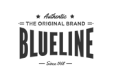

Home Delivery
Fast and reliable home delivery service.
Fast and reliable home delivery service.
Affordable quality products that meet your needs.
Personalized packaging options for your convenience.
Quick and hassle-free refund process.
Since Year 2026
Our supermarket and bakery hybrid will offer a combination of everyday grocery products, fresh bakery products and convenience foods. The main focus will be on providing customers with the essential food products they need for their households, while the bakery will provide freshly prepared products that differentiate our business from a standard supermarket.
know moreThe business will therefore focus mainly on everyday groceries, supported by fresh bakery and convenience foods. Local products will be included to give the business a stronger community identity and provide customers with additional product choices. This product selection is suitable for a consumer market because customers are purchasing products to meet their individual or household needs. Consumer markets are markets where purchases are made to meet the needs of individuals or small groups, such as families or households. The bakery will also provide a specialty element within the broader supermarket range. Instead of competing only through the number of products available, the business will use freshly baked products as a point of differentiation. This creates a balance between important everyday shopping and convenient, fresh food experiences.
Overall, our product range will be broad enough to meet everyday household needs but focused enough to maintain the identity of the supermarket bakery hybrid.
Our supermarket and bakery hybrid will operate in a competitive South African food retail environment, with major competitors including Shoprite, Checkers, Pick n Pay and Woolworths Food. Shoprite is a strong competitor because of its focus on affordable everyday groceries, while Checkers competes through convenience and a wide range of food products. Pick n Pay is also a direct competitor because it provides customers with a broad supermarket product range, and Woolworths Food competes through a stronger focus on quality and premium fresh food products. Although these retailers offer similar grocery products, our business will position itself between a traditional supermarket and a specialised bakery by combining affordable everyday groceries with freshly baked products and convenience.
read moreOur main point of differentiation will be the bakery experience, with bread, pastries and other baked products prepared fresh, while customers can still purchase their everyday household groceries in the same store. We will also offer selected locally sourced products to create a stronger connection with the local community. In terms of market positioning, our business will not attempt to compete directly with large supermarkets based only on price or product volume. Instead, we will focus on value, freshness, convenience and customer experience. This positioning will allow us to appeal to customers who want the convenience of completing their grocery shopping in one place but also value fresh bakery products and a welcoming shopping environment. The combination of a supermarket and bakery therefore provides a competitive advantage by offering customers both functional and emotional benefits..
read moreOur supermarket and bakery hybrid will use a value-based pricing strategy that focuses on providing customers with good quality products at affordable and competitive prices. This pricing model is well suited to our target market, which includes families, working professionals and students who are looking for convenience while remaining conscious of their spending. We will use three pricing levels, value, Standard and Premium. The Value level will focus on important everyday products at the most affordable prices, such as a 700 g loaf of bread at approximately R17.99, 2 kg of rice at R29.99, and a dozen eggs at R14.99. The Standard level will provide customers with regular branded and freshly prepared products, such as a bakery loaf at R22.99, a pack of six fresh rolls at R19.99, and a 2 L bottle of milk at R17.99. The Premium level will include specialty and artisan products, such as an artisan sourdough loaf at R25.99, a box of six premium croissants at R59.99, and a decorated celebration cake from R199.99. This levels approach allows customers with different budgets to shop at the same store while supporting our brand position of “fresh, affordable and convenient.” We will also offer promotions such as family grocery bundles, bakery specials, multi buy discounts and loyalty rewards. For example, a Family Breakfast Bundle could include a loaf of bread, 18 eggs, 2 L milk and a packet of butter for approximately R99.99, while a Student Breakfast Combo could include a fresh roll, yoghurt and a piece of fruit for R29.99. Our business will therefore position itself between budget supermarkets and premium food retailers by offering affordable everyday products while using our fresh bakery and locally sourced products to provide additional quality and value. This pricing strategy aligns with our target market and differentiates the business through a combination of competitive prices, freshness, quality and convenience. Pricing, together with suppliers and competition, are important factors influencing the direct food retail environment.





Copyrights © 2026 - Freshrise Market, All Rights Reserved.
Distributed By - freshrise